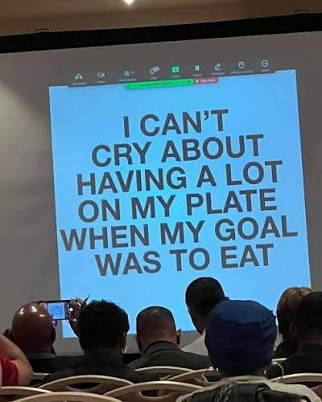
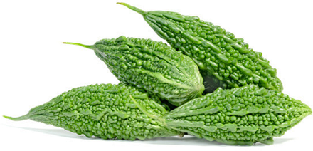
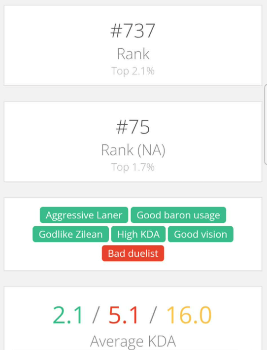
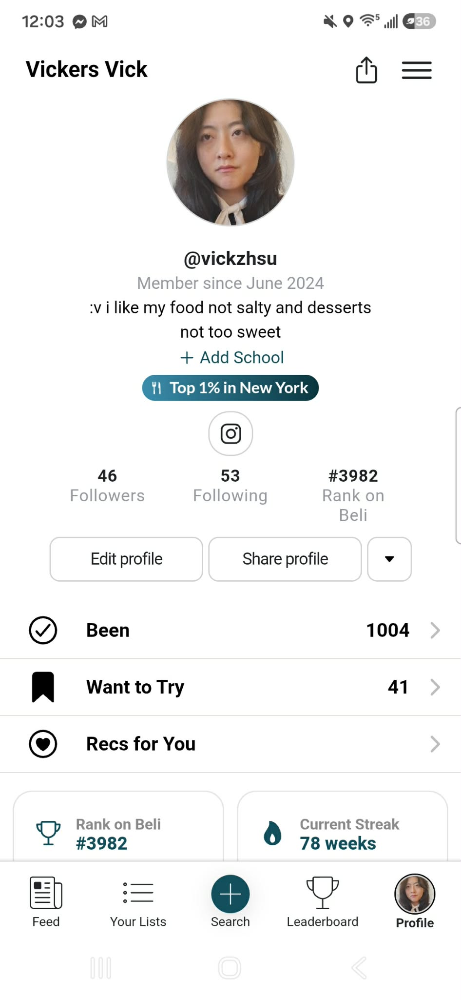
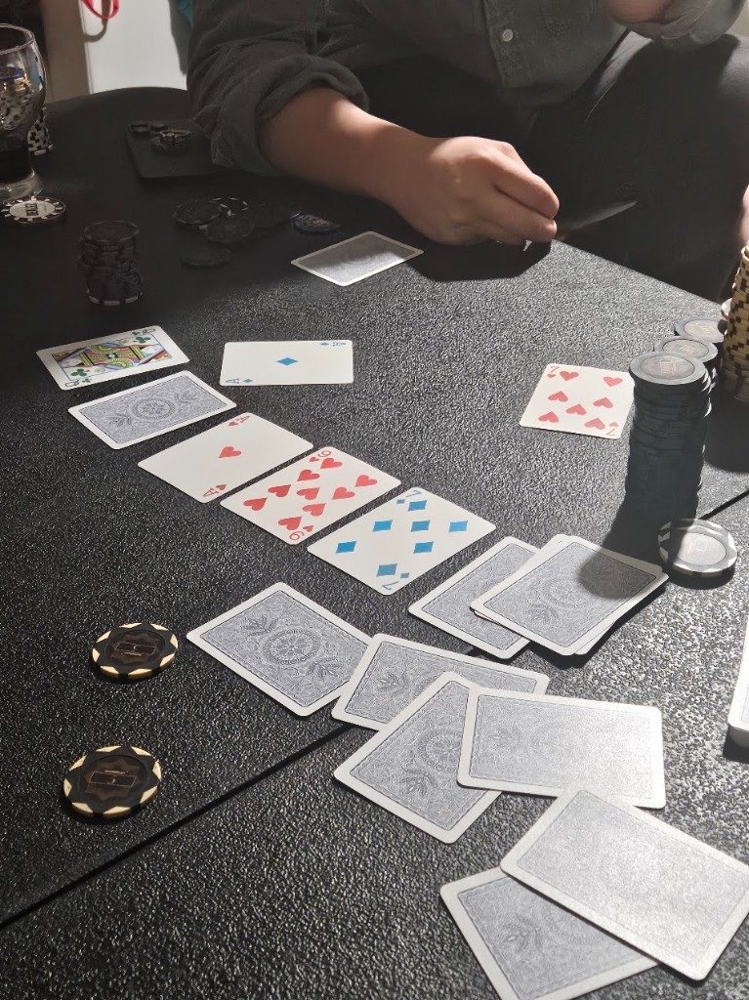
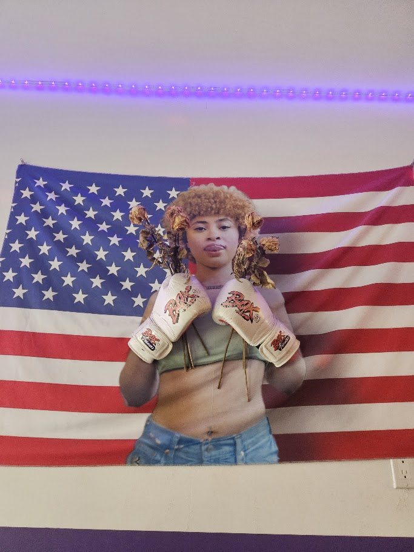
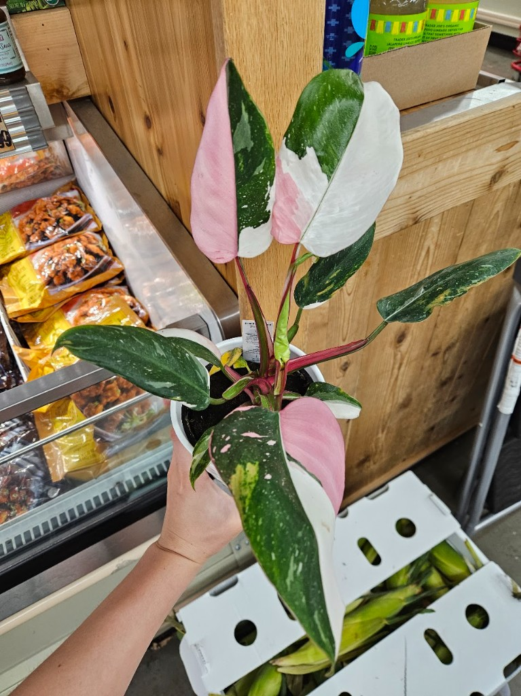

ABOUT ME
吃苦 (chī kǔ) is a Chinese expression that literally translates to "eat bitterness." It means having the willingness to persevere through hardship.
I've always believed that anything meaningful comes with its share of challenges. I don't have to enjoy every part of the process to find it worthwhile.
I approach life with curiosity and an open mind. I'm naturally competitive, enjoy a good challenge, and tend to go down rabbit holes whenever something catches my interest. I'm always looking to learn a little more than what's immediately in front of me.

-
PROJECT #1: MonkEV Blackjack Trainer
Built in collaboration with a partner. I helped shape the product design and direction and contributed code to make blackjack decisions faster, more consistent, and easier to understand.
- Problem
- Static strategy charts do not build fast recall. Players need repetition, targeted practice, and useful feedback on mistakes.
- Product
- Hand drills that target weak spots, an adaptive strategy chart, and card-counting practice from speed drills to table simulations.
- Training systems
- Casino-specific rules, Hi-Lo and Knockout counting, bet-spread practice, and advanced counter deviations.
-
Work in progress
PROJECT #2: Mooscles
A coverage-aware workout refresh tool for people who already know how they like to train.
- Problem
- Self-directed lifters tend to repeat familiar exercises, making routines stale and allowing movement or muscle coverage to narrow over time.
- Key decision
- Preserve user agency instead of generating an entirely new program. Mooscles keeps the workout's anchors and recommends targeted rotations where coverage or repetition suggests a change would be useful.
- Product
- Smart Refresh identifies useful substitutions, Muscle Roulette encourages exploration and Coverage Visualization shows how those choices change the workout.
- Why I'm building it
- Most fitness products are designed around tracking or prescription. I'm interested in the space between them: helping someone make a better decision without taking the decision away from them.
HOBBIES
-
Diamond I Peak Top 2% NA #75 Zilean NA

League of Legends
My game of choice to de-stress. I like the fast pace and the challenge of adapting to new people and situations, working with random teammates, and finding that focused flow state each match.
-

@vickzhsu
Beli Enthusiast
I love experiencing cultures and places through food. I rate restaurants based on food quality, price, value, and sometimes ambiance.
Open Beli profile (opens in a new tab) -

Poker
I dabble in poker. I am a big fan of psychoanalyzing faces, sweating through hands, and trying to read everyone else’s poker face without revealing my own. Another great strategy game.
-

Yoga, boxing, and Pilates Movement & Fitness
I rotate between yoga, boxing, and Pilates. I am an amateur enthusiast, still learning the ropes and enjoying the variety.
-

Horticulture
I started collecting plants in 2021 and have kept them ever since, with a particular love for variegated philodendrons and monsteras. Along the way, I have built extensive hands-on knowledge of propagation, care, and keeping finicky plants thriving.
-
Contact Me via LinkedIn (opens in a new tab)